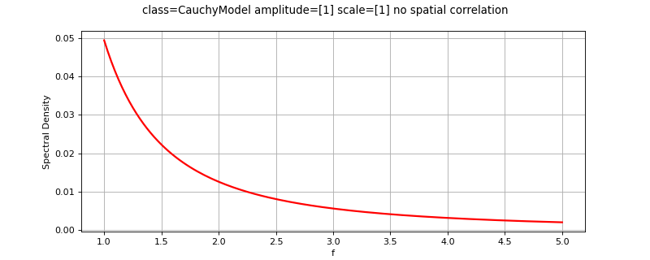

CauchyModel¶
(Source code, png)

- class CauchyModel(*args)¶
Cauchy spectral model.
Refer to Parametric spectral density functions.
- Available constructors:
CauchyModel(theta, sigma)
- Parameters:
- thetasequence of float
Scale coefficients
 of the spectral density function.
Vector of size n
of the spectral density function.
Vector of size n- sigmasequence of float
Amplitude coefficients
 of the spectral density function.
Vector of size p
of the spectral density function.
Vector of size p
Notes
The spectral density function of input dimension n and output dimension p writes:
![\forall (i,j) \in [0,p-1]^2, S(f)_{i,j} = 2 \Sigma_{i,j} \prod_{k=1}^{n} \frac{\theta_k}{1 + (2\pi \theta_k f)^2}]()
Examples
>>> import openturns as ot >>> spectralModel = ot.CauchyModel([3.0, 2.0], [2.0]) >>> f = 0.3 >>> print(spectralModel(f)) [[ (0.191364,0) ]] >>> f = 10 >>> print(spectralModel(f)) [[ (1.71084e-07,0) ]]
Methods
__call__(frequency)Evaluate the spectral density function for a specific frequency.
computeStandardRepresentative(frequency)Compute the standard representant of the spectral density function.
draw(*args)Draw a specific component of the spectral density function.
Get the amplitude parameter of the spectral density function.
Accessor to the object's name.
getId()Accessor to the object's id.
Get the input dimension of the spectral density function.
getName()Accessor to the object's name.
Get the spatial correlation matrix of the spectral density function.
Get the dimension of the SpectralModel.
getScale()Get the scale parameter of the spectral density function.
Accessor to the object's shadowed id.
Accessor to the object's visibility state.
hasName()Test if the object is named.
Test if the object has a distinguishable name.
setAmplitude(amplitude)Set the amplitude parameter of the spectral density function.
setName(name)Accessor to the object's name.
setScale(scale)Set the scale parameter of the spectral density function.
setShadowedId(id)Accessor to the object's shadowed id.
setVisibility(visible)Accessor to the object's visibility state.
- __init__(*args)¶
- computeStandardRepresentative(frequency)¶
Compute the standard representant of the spectral density function.
- Parameters:
- taufloat
Frequency value.
- Returns:
- rhoComplex
Standard representant factor of the spectral density function.
Notes
Using definitions in
SpectralModel: the standard representative function writes:![\forall \vect{f} \in \Rset^n, \rho(\vect{f} \odot \vect{\theta}) = \prod_{k=1}^{n} \frac{1}{1 + (2\pi \theta_k f)^2}]()
where

- draw(*args)¶
Draw a specific component of the spectral density function.
- Parameters:
- rowIndexint,
![0 \leq rowIndex < dimension]()
The row index of the component to draw. Default value is 0.
- columnIndex: int, :math:`0 leq columnIndex < dimension`
The column index of the component to draw. Default value is 0.
- minimumFrequencyfloat
The lower bound of the frequency range over which the model is plotted. Default value is SpectralModel-DefaultMinimumFrequency in
ResourceMap.- maximumFrequencyfloat
The upper bound of the frequency range over which the model is plotted. Default value is SpectralModel-DefaultMaximumFrequency in
ResourceMap.- frequencyNumberint,
![pointNumber \geq 2]()
The discretization of the frequency range
![[minimumFrequency, maximumFrequency]]() over which the model is plotted. Default value is SpectralModel-DefaultFrequencyNumber in class:~openturns.ResourceMap.
over which the model is plotted. Default value is SpectralModel-DefaultFrequencyNumber in class:~openturns.ResourceMap.- modulebool
Flag to tell if module has to be drawn (True) or if it is the argument to be drawn (False). Default value is True.
- rowIndexint,
- Returns:
- graphGraph
Graphic of the specified component
- getAmplitude()¶
Get the amplitude parameter of the spectral density function.
- Returns:
- amplitude
Point The used amplitude parameter.
- amplitude
- getClassName()¶
Accessor to the object’s name.
- Returns:
- class_namestr
The object class name (object.__class__.__name__).
- getId()¶
Accessor to the object’s id.
- Returns:
- idint
Internal unique identifier.
- getInputDimension()¶
Get the input dimension of the spectral density function.
- Returns:
- inputDimensionint
SpatialDimension of the SpectralModel.
- getName()¶
Accessor to the object’s name.
- Returns:
- namestr
The name of the object.
- getOutputCorrelation()¶
Get the spatial correlation matrix of the spectral density function.
- Returns:
- spatialCorrelation
CorrelationMatrix Correlation matrix
![\mat{R} \in \mathcal{M}_{dimension \times dimension}([-1, 1])]() .
.
- spatialCorrelation
- getOutputDimension()¶
Get the dimension of the SpectralModel.
- Returns:
- dimensionint
Dimension of the SpectralModel.
- getScale()¶
Get the scale parameter of the spectral density function.
- Returns:
- scale
Point The used scale parameter.
- scale
- getShadowedId()¶
Accessor to the object’s shadowed id.
- Returns:
- idint
Internal unique identifier.
- getVisibility()¶
Accessor to the object’s visibility state.
- Returns:
- visiblebool
Visibility flag.
- hasName()¶
Test if the object is named.
- Returns:
- hasNamebool
True if the name is not empty.
- hasVisibleName()¶
Test if the object has a distinguishable name.
- Returns:
- hasVisibleNamebool
True if the name is not empty and not the default one.
- setAmplitude(amplitude)¶
Set the amplitude parameter of the spectral density function.
- Parameters:
- amplitude
Point The amplitude parameter to be used in the spectral density function.
- amplitude
- setName(name)¶
Accessor to the object’s name.
- Parameters:
- namestr
The name of the object.
- setScale(scale)¶
Set the scale parameter of the spectral density function.
- Parameters:
- scale
Point The scale parameter to be used in the spectral density function. It should be of size dimension.
- scale
- setShadowedId(id)¶
Accessor to the object’s shadowed id.
- Parameters:
- idint
Internal unique identifier.
- setVisibility(visible)¶
Accessor to the object’s visibility state.
- Parameters:
- visiblebool
Visibility flag.


{kind=link}